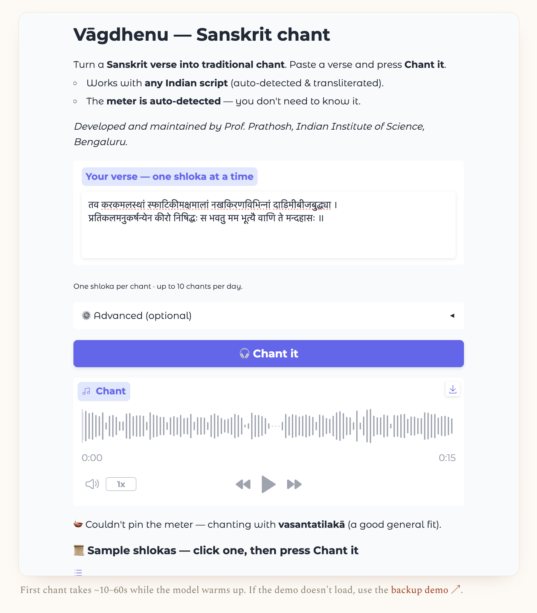
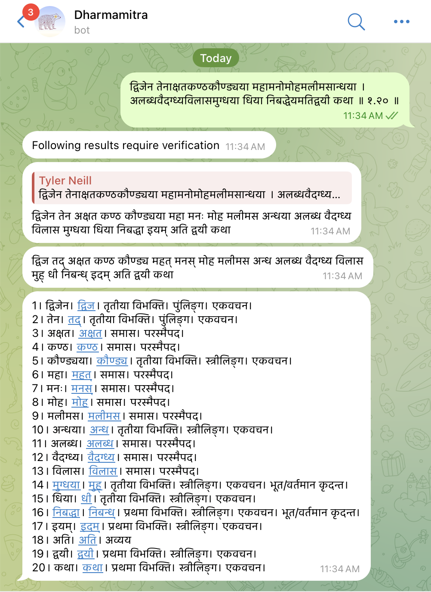
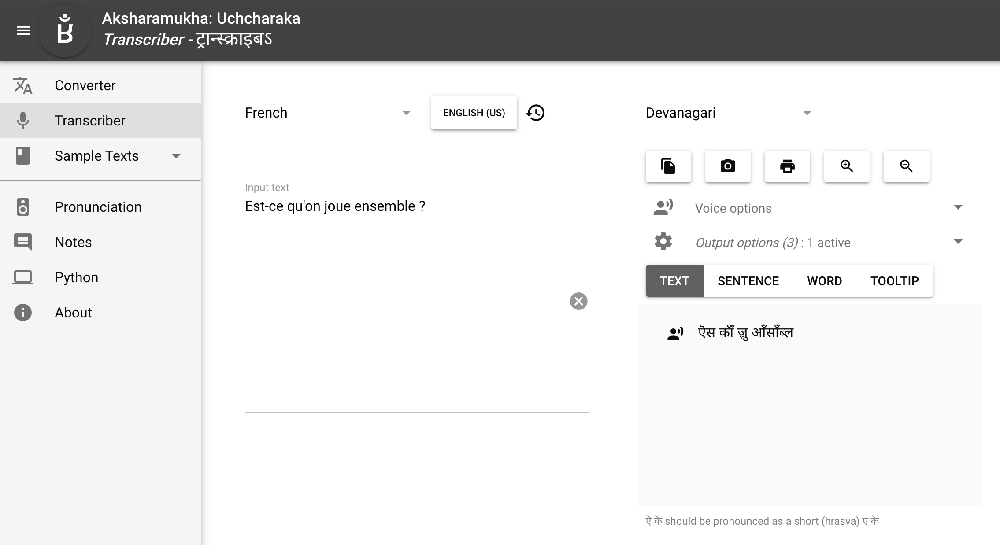
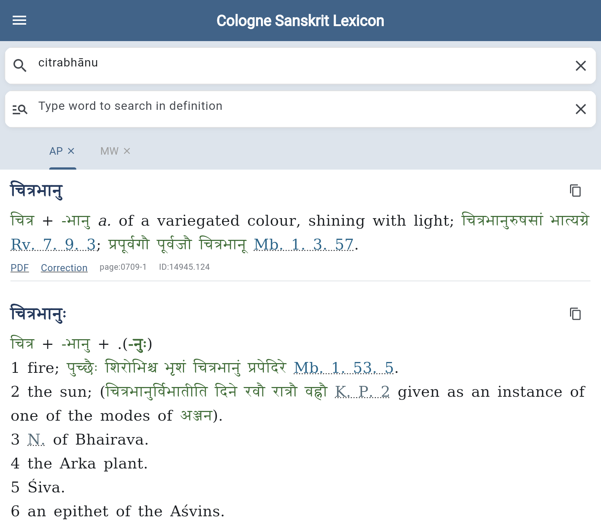

Sometimes I come across Sanskrit Tech tools that I'm surprised are not more well advertised or discussed. Without further ado, here's a quick listing of some especially fun ones I've noticed lately.
Vāgdhenu — Sanskrit TTS chanting system

Sanskrit text-to-speech (TTS) has existed in some form for a while — e.g., on sanskritdictionary.com, which sadly doesn't seem to be working for me now — and of course you can now ask AI to try, too. Meter identification is similar: I've written extensively about options (most recently here). In turn, it makes sense that the combination of these two would be more niche and difficult to realize. Now we have such an attempt at this use case of text in, chanted audio out.
The model-based tool, a solo project by Prof. Prathosh A. P. at IISc Bengaluru, attempts to figure out meter on its own — not a great design decision, in my opinion — and then sing it in a traditional melody. It's free and open, and there's a live demo online you can try, limited to a few attempts per day.
As with all things nowadays, you should also try asking AI to do it as a baseline. Gemini and Sarvam appear to be best at present.
Telegram bot for Dharmamitra Grammatical Analysis

The idea here is that you want to use Dharmamitra's grammatical analysis feature, but you don't want to use the website UI, nor the browser extension (e.g., for Chrome), nor do you want to interact more programmatically — there's also an API, a Python package, and an Emacs extension. Instead, you want to "chat at" a specialized bot on a messaging platform, an interface style becoming common across social software platforms ranging from Slack and Discord to X and Instagram. This particular bot is on Telegram, which North American readers may not be familiar with, but which enjoys high usage in India, second only to WhatsApp.
In short, you "@" the bot in a chat message and give it the chunk of Sanskrit you want analyzed. The bot then goes off, hits the Dharmamitra API serving ByT5-Sanskrit, does a bunch of post-processing on the response, and gives you the result. In contrast to Skrutable, which takes care to clearly retain compound information when using the Dharmamitra API for word splitting, this one is a bit more rough-and-ready. Basic inflection info is provided, e.g., case/gender/number for substantives. And instead of Dharmamitra's own integrated dictionary data, it directs the user to kosha.app, part of the Sanskrit.Today project ecosystem by Ashok CM. Overall, not something I see myself using, but interesting as an interaction style I was personally less aware of.
The bot's author is Shantanu Oak, who is super-online: https://github.com/shantanuo, https://oksoft.blogspot.com/, https://linktr.ee/shantanuo.
Aksharamukha Transcriber

Aksharamukha is still mainly focused on being a transliteration tool that converts Indic text from one phonetic writing scheme to another. In a closely related move, though, for fun, the creator added an independent tool on the same site, called "Transcriber" or "Uchcharaka", which converts text from any language, in whatever non-phonetic writing system it uses, into a phonetic rendering in Indic scripts. In other words, you input, e.g., something in French ("Est-ce qu'on joue ensemble?") and it can show you how best to represent that in, e.g., Devanāgarī ("ऎस कॉँ ॹु आँसाँब्ल"). This is done with the software library espeak, which understands how to convert natural language input from many languages into IPA. From there, it's relatively easy to represent in an Indic script, most of which are used quite phonetically — alphabetic extensions for loanwords, like Hindi ॉ, seem to be handled well — and of course, Aksharamukha can then move freely between all the Indic scripts. Very clever, and a great party trick for the classroom. Nice work, Vinodh!
Cologne Sanskrit Lexicon

The Cologne Digital Sanskrit Dictionaries dictionaries have been a go-to for online Sanskrit lookup for ages. There's a "basic display," e.g. for Monier-Williams, and for a few years now also the "simple search," which is actually a more powerful interface that sports autocomplete and supports easily switching between the various dictionary sources.
Now, yet another new, also official interface has quietly appeared. It's basically more slick and user-friendly, including tabs for your preferred dictionary sources, plus offline mode, which is very handy when working in low-connectivity areas. Many thanks are due to Dhaval Patel for continuing his diligent work on this.